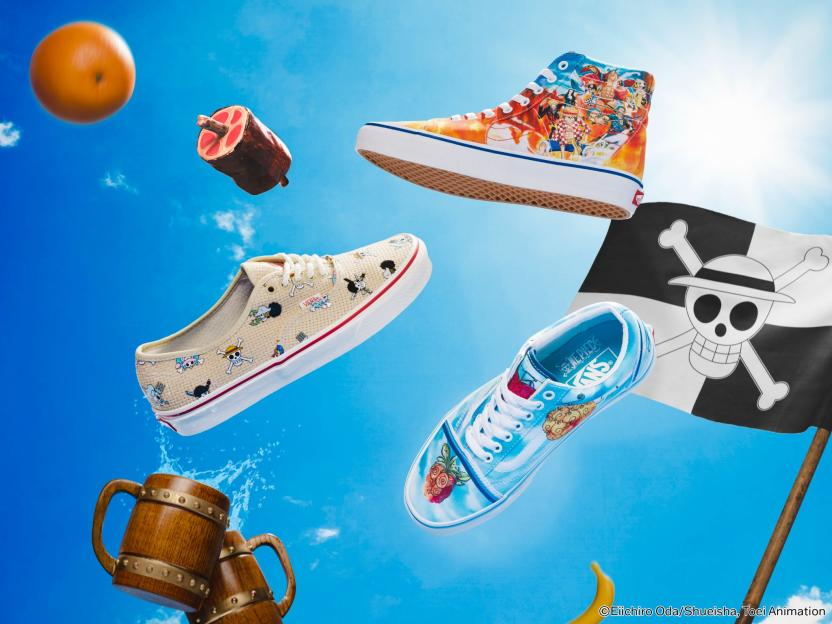

Vans se ha asociado con la popular serie de anime One Piece para crear una colección de productos que seguro agradará a los fanáticos de ambas marcas. La colección Vans x One Piece presenta una variedad de diseños inspirados en los personajes y el mundo del anime. Entre los productos más queridos de la colección, destacamos la silueta Vans Classic Old Skool con las infames frutas del diablo, que otorgaron diferentes poderes sobrehumanos a muchos de los personajes de la historia. También llega la Classic Authentic, inspirada en el estilo náutico estadounidense tradicional, con una parte superior de tela de arpillera 100% algodón y bordados con símbolos icónicos de One Piece que rinden homenaje a la gorra de sombrero de paja.
Los precios de los productos de la colaboración varían desde los $25.000 a los $100.000 pesos chilenos, y los fans pueden comprar los artículos en la tienda en línea de Vans o en algunas tiendas físicas selectas. Esta no es la primera vez que Vans se asocia con una marca de anime, ya que en el pasado ha colaborado con otras series como Dragon Ball Z y Naruto. Sin embargo, la asociación con One Piece es especialmente emocionante ya que la serie ha sido una de las más populares entre los fans de anime durante décadas. La colaboración entre Vans y One Piece es una oportunidad emocionante para que los fans muestren su amor por la serie de anime y también para agregar algunos elementos nuevos a sus guardarropas. Para los fanáticos de One Piece y Vans por igual, por lo que esta colección probablemente está siendo un éxito.